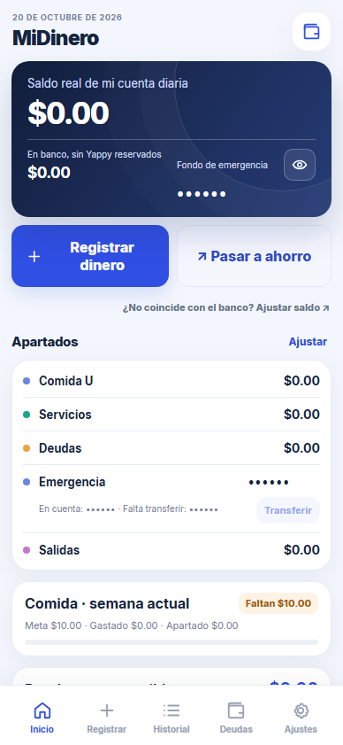

Para poner las cuentas en orden
MiDinero
¿Cuánto tengo disponible y cuánto ya tiene destino? MiDinero reúne movimientos, apartados y deudas para que sea más fácil verlo.
Un poco más sobre este proyecto +
El problema: entender cuánto dinero está disponible y qué parte tiene un propósito.
La propuesta: reunir saldo, ahorro, apartados e historial en un recorrido accesible desde la navegación principal.
Para explorar: el registro de movimientos y la separación entre planificar un ahorro y confirmar una transferencia.